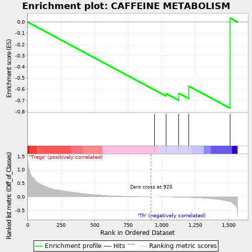
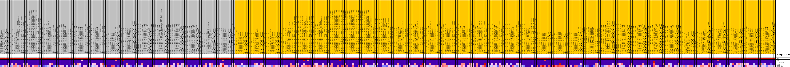
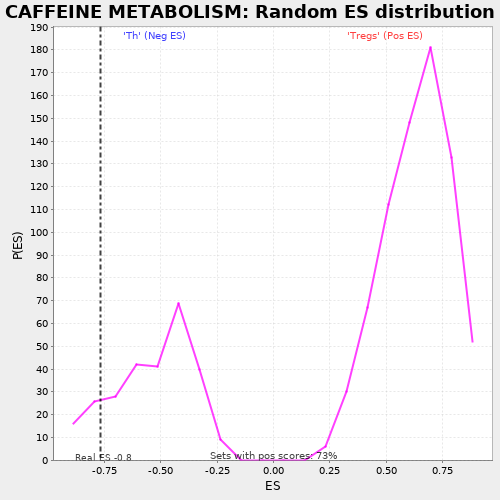

| | | Dataset | expr.pheno.cls#Tregs_versus_Th |
| Phenotype | pheno.cls#Tregs_versus_Th |
| Upregulated in class | Th |
| GeneSet | CAFFEINE METABOLISM |
| Enrichment Score (ES) | -0.76926875 |
| Normalized Enrichment Score (NES) | -1.436421 |
| Nominal p-value | 0.12915128 |
| FDR q-value | 0.70803756 |
| FWER p-Value | 0.352 |
Table: GSEA Results Summary

Fig 1: Enrichment plot: CAFFEINE METABOLISM
Profile of the Running ES Score & Positions of GeneSet Members on the Rank Ordered List
| PROBE | DESCRIPTION
(from dataset) | GENE SYMBOL | GENE_TITLE | RANK IN GENE LIST | RANK METRIC SCORE | RUNNING ES | CORE ENRICHMENT | | 1 | NAT2 | na | | | 947 | 0.000 | -0.6067 | No |
| 2 | NAT1 | na | | | 1033 | -0.005 | -0.6395 | Yes |
| 3 | CYP2A6 | na | | | 1128 | -0.014 | -0.6366 | Yes |
| 4 | XDH | na | | | 1203 | -0.024 | -0.5732 | Yes |
| 5 | CYP1A2 | na | | | 1510 | -0.176 | 0.0352 | Yes |
Table: GSEA details [plain text format]

Fig 2: CAFFEINE METABOLISM
Blue-Pink O' Gram in the Space of the Analyzed GeneSet

Fig 3: CAFFEINE METABOLISM: Random ES distribution
Gene set null distribution of ES for CAFFEINE METABOLISM